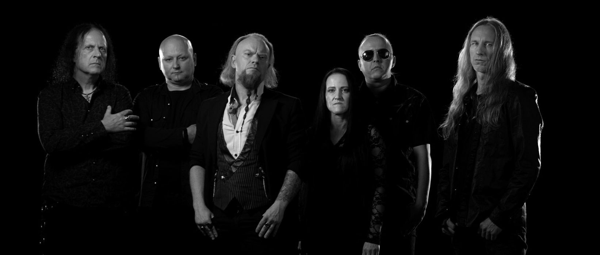

Cemetery of Scream — doom / gothic metal, Kraków

Muzyka na granicy snu i ciszy.Music at the edge of sleep and silence
Kraków, Polska
Doom / gothic metal
Od 1992

Muzyka na granicy snu i ciszy.Music at the edge of sleep and silence